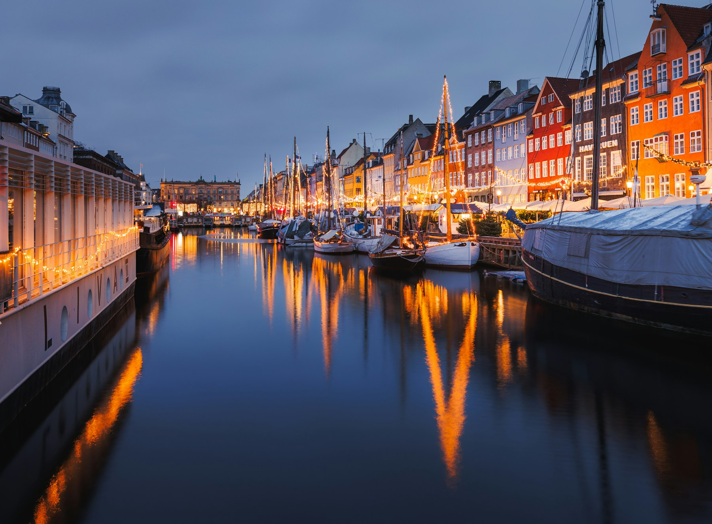

A harbour walk, a well-made coffee, and time to take the long way home.
WINTER ESCAPES / 2027
A few days.
A world away.
Discover curated winter city breaks.
Good places, unhurried plans, and a little room
to follow your curiosity.
For the days you can get away.
And the stories you’ll bring back.
EUROPE

Small escapes. A fresh perspective.
Three cities. Plenty of ways to make them yours.THE WINTER COLLECTION
Somewhere that
feels like a good idea.
Canal walks. Coffeehouse afternoons.
A city you haven’t quite met yet.
Choose where your next story starts.
3 city stories
Grand streets, small rituals, and an afternoon that doesn’t need a schedule.
Cross a bridge, turn a corner, and leave enough room for a little discovery.
THE ELSEWEEK WAY
Less rushing.
More being there.
A city break should feel like a break.
We start with a few thoughtful ideas.
You leave room for the unexpected.
A good starting point.
Places to explore, a neighbourhood to get to know, and an outline you can shape.
Space for your own rhythm.
A morning with a plan. An afternoon without one. Nothing to tick off for the sake of it.
The details, kept clear.
Know what’s inspiration and what still needs planning, before you make a commitment.
A LITTLE INSPIRATION
Notes from elsewhere.
LET’S START WITH YOU
Where would you
rather be?
Choose a city, a little time, and what you’d like more of. We’ll turn it into a trip brief you can keep.
A starting point for your next escape.
No booking or payment needed.
No booking or payment needed.
BEFORE YOU GO
Good questions.
What kind of trips are these?
Our Winter Escapes collection explores short European city breaks in Copenhagen, Vienna and Prague. The outlines are starting points you can adapt to your interests.
Can I book a trip here?
This is a fictional travel studio created for a product demonstration. You can explore destinations and create a trip brief. It does not take bookings, payments, or send enquiries.
Are flights and hotels included?
No package is sold here. The suggested outlines have no confirmed transport, accommodation, prices or availability. Your downloaded brief makes the remaining planning steps clear.
What happens to my trip brief?
It is generated in this browser and is not sent to a server. Download a copy if you want to keep it. Closing or reloading the page clears the on-page result.